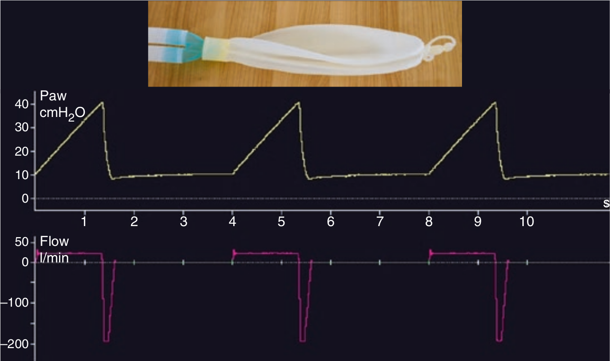

در کنترل حجمی با شدت جریان مربع شکل، چنانچه تنها جزء الاستیک وجود داشته باشد (مثلا فقط بالون)، در این صورت محنی فشار مثلثی شکل خواهد بود. یعنی فشار در طول فاز دمی بتدریج افزایش می یابد. شیب این منحنی فشار متناسب با الاستانس سیستم تنفسی می باشد.

در کنترل حجمی افزایش تدریجی فشار در فاز دمی:
۱ - در صورت شدت جریان ثابت، خطی است
۲ - الگوی نمائی دارد
۳ - در صورت کاهش کمپلیانس سیستم تنفس، شیب آن تندتر می شود
۴ - با افزایش حجم جاری شیب آن تندتر میشود
۵ - یک و سه